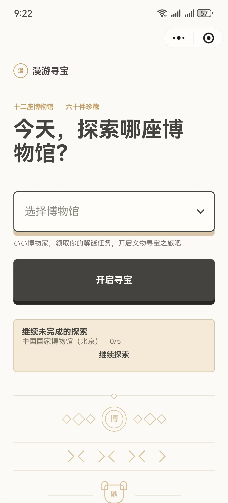
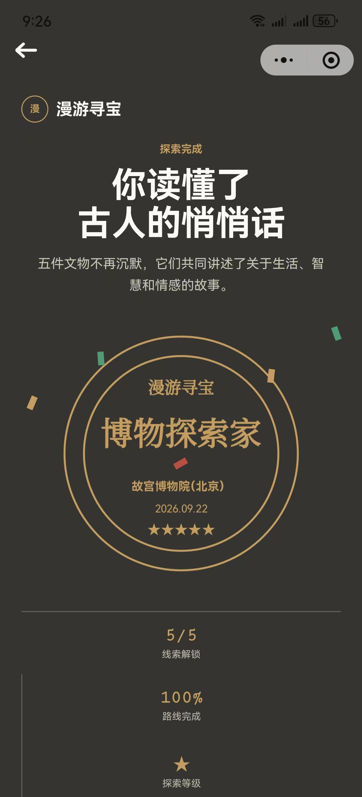

01 / 数学可视化
将数量关系转化为可操作的路线。
联动题目条件、角色位置与数据读数，支持学生理解速度、时间和路程。
- 设计
- 拖动角色，观察路线与数值变化。
- 范围
- 单段路程、单段时间、分段总路程、相遇时间四类题型。
- 进展
- 已完成界面；往返与追及等题型仍在扩展。
01 / 我在探索什么
围绕儿童认知、课堂任务和教师流程定义问题，明确学习目标与使用条件。
通过课程原型、交互工具与评价设计检验方案，将教育判断转化为可交付的内容与产品。
02 / 作品实验
选择展品，查看设计目标与实现路径。
点击前后展品，或在展台上滚动切换
01 / 数学可视化
联动题目条件、角色位置与数据读数，支持学生理解速度、时间和路程。
02 / 文化探索
选择博物馆、领取线索、解锁藏品，让观察与讨论贯穿参观过程。


03 / 教师工具
将照片提取、服装搭配与结果导出整合为连续流程，减少环创素材的重复处理。
04 / 教育工作流
用多维表格组织观察材料，借助 AI 梳理成长片段，辅助形成面向家长的记录初稿。
03 / 个人履历速览
选择时间节点，查看阶段职责与能力积累。
完成学前教育本科训练，学习儿童心理、游戏与教学设计；通过混龄教学与亲子活动积累实践经验。
完成学前教育硕士训练，参与课题并研究儿童阅读发展；在数学教研中开展教学知识测量与分析。
承担班级教学与个性化成长支持，参与不同年龄段课程设计、公开课展示及新教师培训。
负责学前领域数据标注与质量把控，将教育专业知识应用于训练数据的判断和校准。
承担启蒙课程、赛事课程与小学 PBL 设计，交付课程内容包，并协同产品、技术与市场推进迭代。
04 / 我的工作方法
观察孩子、教师和家长正在完成什么任务。
找到阻力，判断课程、产品或 AI 工具能否介入。
用 Vibe Coding、扣子、飞书、Trae 等完成可体验版本。
让真实使用与反馈推动下一轮课程或产品迭代。
在自己的工作实践中，AI 工具帮助我把部分重复任务的处理效率提升约一倍。